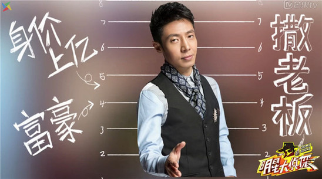
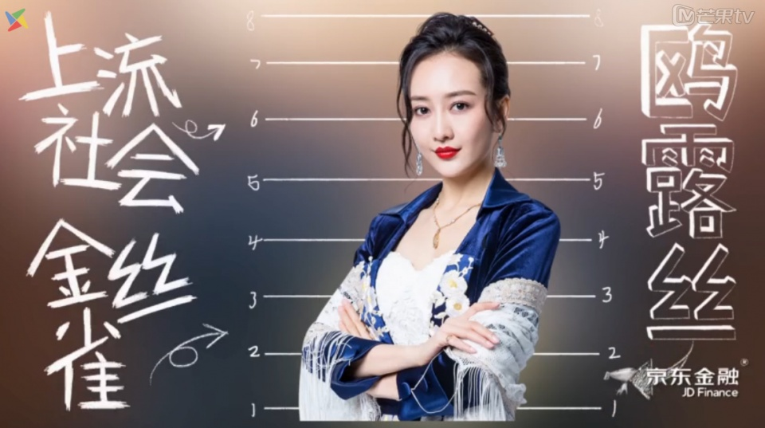

固定成員
| 人名 | 照片 | 簡介 |
| 何炅 | 第一季和第二季的金條王，有自己的一套思維，對於現場有敏銳的觀察，是一個很厲害的人物。 | |
| 撒貝寧 |  | 又稱為狗頭偵探、撒明燈。在節目中思路很清晰，但往往在最後一刻總是無法投對兇手。 |
常駐成員
| 人名 | 照片 | 簡介 |
| 吳映潔 (鬼鬼) |
又稱鎖匠和警犬。在節目中對於開鎖非常的執著和有天賦，任何藏的很深的線索都會被她翻出來。 | |
| 王歐 |  | 在節目中有很敏銳的直覺，也有自己的分析邏輯，對於自己懷疑的會很盡力的去找證據。 |
| 白敬亭 | 又稱為背鍋俠。常常在節目中背黑鍋而被關進牢籠，但對於作案手法的分析很厲害。 |